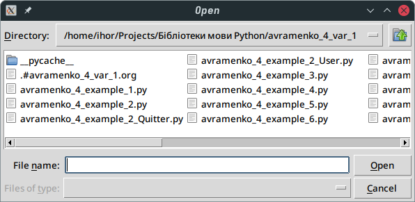
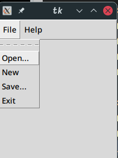

Розробка додатків з графічним інтерфейсом на основі бібліотеки tkinter
Table of Contents
- 1. Аудиторна частина
- 2. Самостійна частина. Варіант 1
1. Аудиторна частина
1.1. Приклади коду 17.1 - Радіокнопка
from tkinter import * ventana = Tk() V = IntVar(); m = IntVar() ventana.title("Radiobutton") ventana.geometry("200x150") etiquental = Label(ventana, text = "Radio demos").place(x=20,y=20) Color = Radiobutton(ventana,text="Color",variable=V,value=0).pack() Query = Radiobutton(ventana,text="Query",variable=V,value=1).pack() Input = Radiobutton(ventana,text="Input",variable=V,value=2).pack() Open = Radiobutton(ventana,text="Open", variable=V,value=3).pack() Error = Radiobutton(ventana,text="Error",variable=V,value=4).pack() ventana.mainloop()
1.2. Приклади коду 17.2 - Кнопка
1.2.1. 1.Quitter
from tkinter import * from tkinter.messagebox import askokcancel class Quitter(Frame): def __init__(self, parent=None): Frame.__init__(self, parent) self.pack() widget = Button(self, text='Quit', command=self.destroy) widget.pack(side=RIGHT, expand=YES, fill=BOTH) def quit(self): ans = askokcancel('Verify exit', "Really quit?") if ans: Frame.destroy(self) if __name__ == '__main__': Quitter().mainloop()

1.2.2. 2.User
from tkinter import * from avramenko_4_example_2_Quitter import Quitter def fetch(): print('Input ==> "%s"' % ent.get()) root = Tk() ent = Entry(root) ent.insert (0, 'Have a cigar') ent.pack(side = TOP, fill=X) ent.focus() ent.bind('<Return>', (lambda event: fetch())) btn = Button(root, text='Fetch', command=fetch) btn.pack(side=LEFT) Quitter(root).pack(side=RIGHT) root.mainloop()

1.3. Приклади коду 17.3 - Меню
1.3.1. 1
from tkinter import * root = Tk() def sq1(): fra.config(width=200,height=200) print('200x200') def sq2(): fra.config(width=400,height=400) print('4000x4000') fra = Frame(root,width=300,height=100,bg="Black") fra.pack() m = Menu(root) root.config(menu=m) cm = Menu(m) m.add_cascade(label="File",menu=cm) sm = Menu(m) m.add_cascade(label="Edit",menu=sm) sm.add_command(label="200x200",command=sq1) sm.add_command(label="4000x4000",command=sq2) root.mainloop()
200x200
==> ==>
1.3.2. 2
from tkinter import * from tkinter.filedialog import * import fileinput from tkinter.messagebox import * def close_win(): if askyesno("Exit", "Do you want to quit?"): root.destroy() def about(): showinfo("Editor", "This is text editor.\n(test version)") def _open(): op = askopenfilename() for l in fileinput.input(op): txt.insert(END,l) def _save(): sa = asksaveasfilename() letter = txt.get(1.0,END) f = open(sa,"w") f.write(letter) f.close() root = Tk() m = Menu(root) root.config(menu=m) fm = Menu(m) m.add_cascade(label="File",menu=fm) fm.add_command(label="Open...",command=_open) fm.add_command(label="Save...",command=_save) fm.add_command(label="Exit",command=close_win) hm = Menu(m) m.add_cascade(label="Help",menu=hm) hm.add_command(label="About",command=about) txt = Text(root,width=40,height=15,font="12") txt.pack() root.mainloop()

1.3.3. 3
from tkinter import * root = Tk() m = Menu(root) root.config(menu=m) fm = Menu(m) m.add_cascade(label="File",menu=fm) fm.add_command(label="Open...") fm.add_command(label="New") fm.add_command(label="Save...") fm.add_command(label="Exit") hm = Menu(m) m.add_cascade(label="Help",menu=hm) hm.add_command(label="Help") hm.add_command(label="About") root.mainloop() #main ==> mainloop

1.4. Приклади коду 17.4 - Смуга проктутки
1.4.1. 1-ша програма
from tkinter import * def printer(event): x = var.get() print(x) root = Tk() var = IntVar() var.set(5) sca1 = Scale(root,orient=VERTICAL,length=200, from_=0,to=10,tickinterval=2,resolution=1, variable=var) sca2 = Scale(root,orient=HORIZONTAL,length=200, from_=0,to=10,tickinterval=2,resolution=1, variable=var) lab=Label(root, text='Лабораторна робота \n Graphical User Interface', font='Arial 18') but=Button(root, text='Дізнитися значення змінної',width=30,height=3, bg='grey',fg='red',font='Arial 12') but.bind('<Button-1>',printer) lab.pack() sca1.pack() sca2.pack() but.pack() root.mainloop()
1.4.2. 2-ша програма
from tkinter import * root = Tk() myscrollbar = Scrollbar(root) myscrollbar.pack(side=RIGHT, fill=Y) mylistbox = Listbox(root, yscrollcommand = myscrollbar.set) for a in range(20): mylistbox.insert(END,'Lumberjack-' + str(a)) mylistbox.pack(side=LEFT, fill=BOTH) myscrollbar.config(command=mylistbox.yview) root.mainloop()
1.5. Приклади коду 17.5 - Завантаження текстового файлу у редактор
from tkinter import * import tkinter.filedialog def LoadFile(ev): fn=tkinter.filedialog.Open(root, filetypes=[('*.md files', '.md')]).show() if fn == '': return textbox.delete('1.0', 'end') textbox.insert('1.0', open(fn, 'rt').read()) root = Tk() panelFrame = Frame(root, height = 20, bg = 'blue') textFrame = Frame(root, height = 40, width = 50) panelFrame.pack(side = 'top', fill = 'x') textFrame.pack(side = 'bottom', fill = 'both', expand = 1) textbox = Text(textFrame, font='Arial 12', wrap='word') scrollbar = Scrollbar(textFrame) scrollbar['command'] = textbox.yview textbox['yscrollcommand'] = scrollbar.set textbox.pack(side = 'left', fill = 'both', expand = 1) scrollbar.pack(side = 'right', fill = 'y') loadBtn = Button(panelFrame, text = 'Open') loadBtn.bind("<Button-1>", LoadFile) loadBtn.place(x = 10, y = 1, width = 40, height = 20) root.mainloop()
1.6. Приклади коду 17.6 - Геометричні фігури
При натисканні на кнопку Трикутник, Прямокутник тощо, на полотні з‘являється
відповідна фігура, а в текстовому полі її визначення. При клацанні на фігурі,
яка розташована на полотні, вона змінюється на іншу, що теж відноситься до тієї
ж групи (наприклад, трикутники – прямокутні або рівносторонні). Внизу полотна
з'являються пояснення, що характеризують чергову фігуру (наприклад, «прямокутний
трикутник»). Можна отримати частини фігури (для трикутника це сторони), щоб
продемонструвати, як вони утворюються
i = 0 def add_triangle(event): coords = [(50,130,290,40,170,250),(10,10,290,30,200,250), (30,280,330,60,300,200),(50,200,340,200,110,60)] colors = ['red','green','blue','yellow'] global i canvas.itemconfig(t,fill=colors[i],outline='white') canvas.coords(t,coords[i]) i += 1 if i == 4: i = 0 def triangle(): canvas.coords(r,(0,0,0,0)) canvas.itemconfig(t,fill='yellow',outline='white') canvas.coords(t,(50,200,340,200,110,60)) text.delete(1.0,END) text.insert(1.0,'Трикутник - геометрична фігура утворена сполученням трьох точок, що не лежать одній прямій') text.tag_add('title','1.0','1.end') text.tag_config('title',font=('Times',14),foreground='red') def rectangle(): canvas.coords(t,(0,0,0,0,0,0)) canvas.itemconfig(r,fill='lightblue',outline='white') canvas.coords(r,(80,50,360,200)) def ellipse(): pass from tkinter import * win = Tk() b_triangle = Button(text="Треугольник", width=15,command=triangle) b_rectangle = Button(text="Прямоугольник", width=15,command=rectangle) b_ellipse = Button(text="Эллипс", width=15,command=ellipse) canvas = Canvas(width=400,height=300,bg='#222222') text = Text(width=55,height=5,bg='#ffffff',wrap=WORD) t = canvas.create_polygon(0,0,0,0,0,0) canvas.tag_bind(t,'<Button-1>',add_triangle) r = canvas.create_rectangle(0,0,0,0) b_triangle.grid(row=0,column=0) b_rectangle.grid(row=1,column=0) b_ellipse.grid(row=2,column=0) canvas.grid(row=0,column=1,rowspan=10) text.grid(row=11,column=1,rowspan=3) win.mainloop()